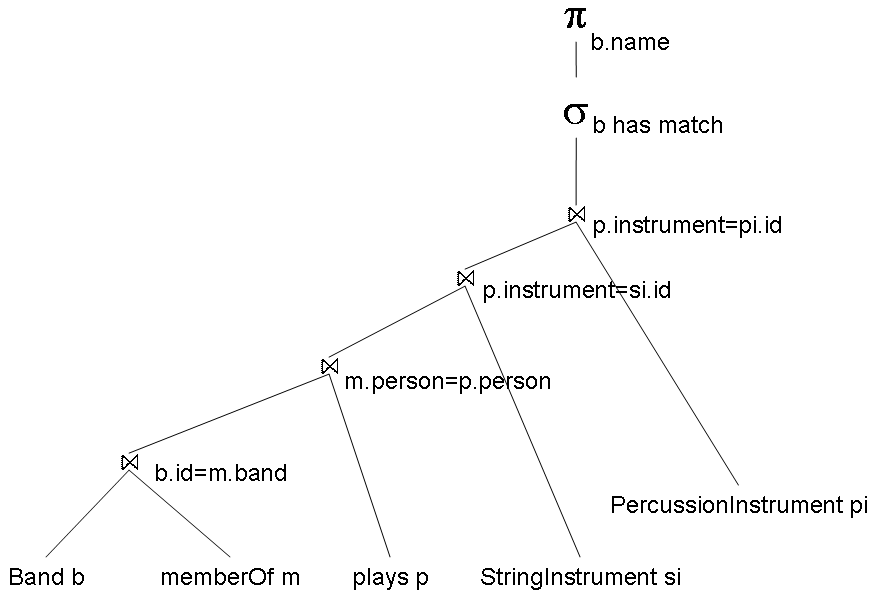

Find all band names of bands that do not have a musician that plays both a string instrument and a percussion instrument.
select b.name
from Band b
where not exists(
select *
from plays p, StringInstrument si, PercussionInstrument pi, memberOf m
where b.id = m.band
and p.person = m.person
and p.instrument = si.id
and p.instrument = pi.id
);

Note that Band must be the first table in the evaluation plan. These joins are outer joins, and the result of the last outer join is restricted (by the selection) to the bands that do not have a match with the other tables.
© 2010 Ken Baclawski. All rights reserved. Redistribution and use in source and binary forms, with or without modification, are permitted provided that redistributions and uses retain this copyright notice.